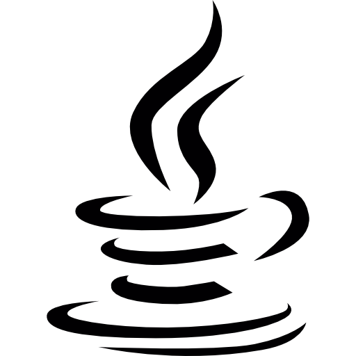

Java PHP
PHP HTML
HTML JavaScript
JavaScriptHola! Sóc Joaquín, una persona apassionada per la tecnologia i el desenvolupament de programari. M'agrada aprendre coses noves, afrontar reptes i convertir idees en projectes funcionals. Actualment estic desenvolupant les meves habilitats en programació i desenvolupament web, treballant amb diferents tecnologies i eines com Git i GitHub. Em considero una persona responsable, curiosa i amb ganes de continuar creixent professionalment. El meu objectiu és seguir adquirint experiència, participar en projectes interessants i crear solucions útils i ben estructurades. Aquest portafoli és una mostra dels projectes en què he treballat i del meu procés d'aprenentatge.

JavaPHPHTMLJavaScriptFiltrar per tecnología